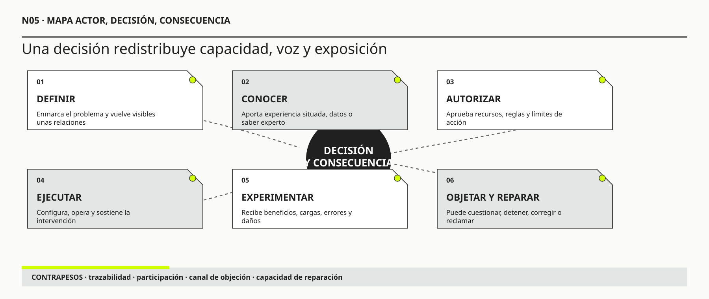

01
01R. Edward Freeman
OBRA PRINCIPAL UTILIZADAStrategic Management: A Stakeholder ApproachPitman, 1984

Una decisión profesional también se juzga por quién puede comprenderla, objetarla y reparar sus consecuencias.
Actores, afectados, poder y perspectivas
Ruta de lectura: problema, distinciones, decisiones, prueba, transferencia y preparación para N06.

Nota. SIN NUM. identifica los aparatos de orientación y referencia que no integran la secuencia argumental.
Seis voces principales para ampliar, contrastar y discutir esta lectura.
01Pitman, 1984
 02
02Daedalus, 1980
 03
03Oxford University Press, 2007
 04
04IRM Press, 2003
 05
05MIT Press, 2020
 06
06NIST AI 600-1, 2024
N05 no resume estas fuentes ni las convierte en una receta. Las pone en tensión para construir juicio profesional.
¿Quién puede definir el problema, quién conoce el trabajo real, quién puede cambiar el sistema y quién soporta sus consecuencias sin participar de la decisión?

Una silla vacía no es ausencia de información. Puede ser evidencia de quién todavía no pudo intervenir en la decisión.
La cooperativa de transporte de una ciudad mediana llevaba meses diseñando una nueva línea nocturna. El proyecto parecía ejemplar. Había comenzado con datos de demanda, mapas de origen y destino, costos de combustible y simulaciones de frecuencia. En la reunión final estaban la presidenta de la cooperativa, dos ingenieros, un representante municipal, el responsable de finanzas y tres delegados de conductores. Sobre una pantalla se veía el recorrido definitivo: menos kilómetros improductivos, mejor conexión con la terminal y una frecuencia de treinta minutos. Nadie podía decir que el diseño hubiera sido improvisado.
La sala tenía una mesa larga y, en un extremo, una silla vacía. Había pertenecido a una delegada que no pudo llegar porque su turno terminaba después de medianoche. Alguien propuso empezar sin ella. “Ya conocemos la posición de los trabajadores”, dijo. La frase parecía razonable: tres conductores estaban presentes y el sindicato había recibido la documentación. La ausencia se interpretó como un problema logístico, no como información acerca del sistema que se estaba diseñando.
La línea se inauguró un lunes. Durante las primeras horas, los tableros confirmaron casi todo lo previsto. La ocupación promedio aumentó, el costo por kilómetro bajó y los tiempos se mantuvieron dentro del margen. El informe de lanzamiento fue positivo. Sin embargo, cerca de las dos de la mañana una mujer que limpiaba oficinas perdió la combinación que utilizaba desde hacía años. La nueva parada quedaba a diecisiete minutos a pie, por una zona sin iluminación. Dos días después, un estudiante que usaba silla de ruedas descubrió que el refugio elegido tenía un desnivel imposible de atravesar sin ayuda. La aplicación mostraba la parada como accesible porque el vehículo tenía rampa; nadie había registrado la vereda.
Ambos problemas podían describirse como “casos particulares”. Ninguno afectaba demasiado el promedio. Tampoco eran defectos del software de planificación: el algoritmo había optimizado correctamente las variables que recibió. El problema estaba antes. El modelo no había incorporado el horario real de quienes salían de limpiar edificios ni la continuidad física entre vehículo, refugio y vereda. Las personas afectadas no habían faltado a una reunión sobre una solución ya definida: habían faltado en el momento en que se decidió qué contaba como demanda, qué significaba accesibilidad y qué costos podían quedar fuera.
La cooperativa convocó entonces una nueva reunión. Esta vez invitó a la trabajadora, al estudiante, a una organización de accesibilidad, al área municipal de iluminación y a personal de seguridad. La escena parecía más inclusiva, pero apareció otro problema. La presidenta abrió el encuentro mostrando el recorrido y pidió “opiniones para mejorarlo”. El verbo mejorar conservaba intacta la decisión principal: la ruta no se discutiría; sólo podían proponerse ajustes. La trabajadora podía hablar, pero no cambiar el objeto de la conversación. El estudiante podía describir el daño, pero no sabía qué presupuesto existía para mover la parada. Los ingenieros podían explicar restricciones, pero utilizaban un vocabulario que convertía las experiencias en excepciones. Todos estaban presentes y, aun así, no poseían la misma capacidad de influir.
La silla vacía empezó a representar algo más profundo que una ausencia física. Representaba consecuencias sin representante, conocimiento que no ingresaba al modelo, preguntas que la agenda no permitía formular y personas a quienes se pedía validar una decisión que ya había adquirido costo político. También representaba un error profesional frecuente: confundir participación con invitación, autoridad con conocimiento y promedio con justicia.
El rediseño mejoró cuando el equipo dejó de preguntar “¿a quiénes consultamos?” y pasó a formular seis preguntas: ¿quién define el propósito?, ¿quién conoce las variaciones del trabajo?, ¿quién autoriza el cambio?, ¿quién puede impedirlo o desviarlo?, ¿quién recibe beneficios o daños?, ¿quién puede reparar si la intervención falla? La trabajadora nocturna no necesitaba decidir la arquitectura del sistema. Sí necesitaba poder modificar la definición de acceso. El estudiante no debía estimar costos. Sí debía participar de la prueba del recorrido completo. Los conductores no representaban automáticamente a pasajeros, limpiadores o personas con movilidad reducida. La organización de accesibilidad tampoco podía hablar por todas ellas sin contrastar episodios concretos.
La lección de la historia no es que toda decisión requiera una asamblea infinita. Eso paralizaría organizaciones y trasladaría a los participantes una carga imposible. La lección es más exigente: una intervención debe justificar quién participa, para qué decisión, en qué momento, con qué evidencia, con qué grado de influencia y mediante qué mecanismo de devolución y reparación. Una silla ocupada no garantiza voz. Una silla vacía no autoriza a tratar como irrelevante a quien no pudo sentarse.
Un mapa de actores no es una lista de interesados dibujada alrededor de una solución. Es una representación provisional de relaciones con una decisión: quién aporta conocimiento, quién controla recursos o significados, quién autoriza, quién ejecuta, quién depende del sistema, quién recibe beneficios o daños, quién puede objetar y quién tiene capacidad de reparar. Su calidad no se mide por cantidad de nombres, sino por las diferencias que vuelve visibles y por las decisiones que obliga a revisar.
Las perspectivas no deben promediarse prematuramente. Una contradicción entre Dirección, Operaciones, Tecnología y personas afectadas puede revelar que utilizan fronteras, tiempos, definiciones o criterios de éxito diferentes. El trabajo metodológico consiste en conservar esa tensión el tiempo suficiente para producir evidencia y diseñar gobierno. Cuando una intervención borra la diferencia demasiado pronto, el consenso puede ser apenas la forma educada que adopta una asimetría de poder.
N04 dejó una disciplina para separar hechos, síntomas, relatos, hipótesis y decisiones, conservar procedencia y registrar qué evidencia podría revisar una conclusión. Ese registro permite saber quién afirmó, quién interpretó y quién decidió. N05 toma ese resultado y formula una pregunta que la trazabilidad por sí sola no responde: ¿qué relaciones hacen que algunas afirmaciones obtengan credibilidad, algunas personas tengan autoridad y otras soporten consecuencias sin poder objetar?
El recorrido se organiza en tres movimientos. Primero se desagrega al interesado genérico y se reconocen conocimiento, poder, trabajo oculto y afectación. Luego se diseña una participación proporcionada mediante el mapa Actor, Decisión, Consecuencia. Finalmente se asignan objeción, supervisión y reparación, también frente a sistemas con IA. N05 no decide todavía qué investigación conviene financiar ni cuándo detenerla. Entrega a N06 un conjunto justificado de actores, afirmaciones, ausencias y riesgos para priorizar evidencia bajo restricciones.
En Ingeniería de Software se aprendió a identificar stakeholders, formular necesidades, negociar requisitos, modelar roles y validar soluciones. Esos aprendizajes siguen siendo indispensables. Un producto que no reconoce quién lo usa, quién lo compra o quién lo mantiene difícilmente pueda diseñarse bien. También se aprendió que los requisitos entran en conflicto y que ninguna especificación es completamente neutral.
METSI agrega una capa anterior y otra posterior. La capa anterior pregunta quién pudo definir el problema y qué relaciones quedaron fuera antes de escribir un requisito. La capa posterior pregunta quién soportará las consecuencias reales cuando el sistema funcione de acuerdo con la especificación. Una funcionalidad puede estar correctamente implementada y producir una distribución injusta de carga, autoridad o riesgo. Un flujo puede satisfacer al usuario principal y volver invisible a quien repara sus excepciones.
Considérese un requisito aparentemente preciso: “El huésped podrá completar el check-in desde su teléfono antes de llegar”. Ingeniería de Software ayuda a definir autenticación, validaciones, integraciones, estados y criterios de aceptación. N05 pregunta además: ¿quién convierte documentos analógicos en datos?, ¿qué ocurre con una persona sin teléfono compatible?, ¿quién decide que una discrepancia exige presencia?, ¿qué trabajo nuevo recibe Recepción?, ¿quién puede corregir una identidad mal asociada?, ¿qué actor queda expuesto si la automatización confirma una habitación aún no disponible? El requisito no desaparece; cambia su contexto de justificación.
La diferencia puede expresarse de forma sencilla. Un análisis tradicional suele preguntar qué necesita cada parte interesada de la solución. Un análisis de actores, poder y perspectivas pregunta también qué puede hacer cada actor con la solución, qué puede hacer la solución sobre él y qué relación de dependencia se crea. Ese cambio impide tratar como equivalentes al patrocinador, al operador, al proveedor, al usuario y a la persona afectada.
El episodio HH-05 comienza cuando Hotel Horizonte convoca a Dirección, Comercial, Tecnología y al proveedor candidato para discutir un nuevo PMS, una aplicación de llegada y un asistente conversacional. La reunión funciona bien. Se acuerdan objetivos, se priorizan funciones y se identifican integraciones. El proveedor trae casos exitosos y controla el vocabulario técnico. Comercial presenta tasas de abandono. Dirección fija una fecha. Tecnología traduce deseos en capacidades. Al finalizar, todos perciben avance.
La mesa no incluye a Recepción, Housekeeping, Mantenimiento, Finanzas, personal nocturno, huéspedes reubicados, personas que necesitan asistencia ni quienes abandonaron el canal digital. El proveedor puede describir lo que el producto hace; no necesariamente cómo el hotel sostiene la promesa. Dirección tiene autoridad para invertir; no observa cada excepción. Comercial conoce conversión; no ve la reparación operativa. La definición resultante, “digitalizar la llegada para reducir espera y dependencia del personal”, parece consensuada porque quienes podrían cuestionar su sentido no estuvieron presentes.
Agregar veinte personas no solucionaría automáticamente el problema. Un taller masivo puede producir ruido, inhibir desacuerdo y consumir tiempo. La pregunta correcta no es cuántos actores faltan, sino qué afirmaciones y decisiones requieren conocimiento, autorización o legitimidad que la mesa actual no posee. Para comprender las excepciones nocturnas, conviene observar turnos y reconstruir episodios. Para decidir presupuesto, se necesita Dirección y Finanzas. Para evaluar accesibilidad, deben participar personas con experiencias distintas y especialistas, pero también probarse el recorrido. Para aceptar riesgo de identidad, se requiere una autoridad explícita y un mecanismo de reparación.
El taller deja de ser una ceremonia cuando cada participación se diseña en relación con una incertidumbre y una decisión. Recepción no asiste para “sentirse incluida”: aporta evidencia sobre cómo se resuelven discrepancias. Housekeeping no valida pantallas: explica qué significa que una habitación esté lista y qué condiciones impiden declararlo. Un huésped no diseña la arquitectura: revela barreras, expectativas y daños que el equipo no puede inferir desde analítica agregada.
La palabra stakeholder es útil para recordar que una intervención no pertenece sólo al equipo técnico. Freeman la formuló como una relación entre la estrategia y grupos capaces de afectar o ser afectados por sus objetivos. Se vuelve peligrosa cuando aplana relaciones muy distintas. Para N05 conviene separar al menos nueve posiciones.
Un decisor posee autoridad formal o legítima para comprometer recursos, aceptar riesgo o modificar una política. Un operador sostiene el servicio y responde ante variaciones. Un usuario directo interactúa con una aplicación o componente. Un beneficiario recibe valor aunque no opere el sistema. Un afectado soporta consecuencias aunque no sea cliente ni usuario. Un experto de dominio conoce reglas o mecanismos relevantes sin necesariamente poder decidir. Un proveedor controla una capacidad bajo contrato. Un responsable debe rendir cuentas por una decisión o resultado. Un regulador o garante establece límites, derechos y evidencia exigible.
Estas categorías no son identidades permanentes. Una persona puede ocupar varias posiciones y cambiar según la decisión. Lucía Ferreyra usa el PMS, opera el servicio, interpreta evidencia, comunica la promesa y repara fallas que quizá no autorizó. Federico Müller es experto técnico y operador de ciertas capacidades, pero depende del proveedor para conocer cambios del producto. Elena Acosta puede aprobar presupuesto, aunque no tenga autoridad legítima para decidir por una persona si acepta un tratamiento de datos opcional.
El mismo actor cambia de relevancia según la pregunta. Para seleccionar proveedor, Finanzas puede ser decisor y Recepción fuente de evidencia. Para declarar apta una habitación, Operaciones y Housekeeping poseen autoridad específica. Para aceptar un cambio contractual, intervienen Dirección y asesoramiento legal. Para conocer el daño de una reubicación, la experiencia del huésped es insustituible. Por eso el mapa debe comenzar con una decisión concreta y no con una lista general de nombres.
Ejemplo breve: la contraseña compartida. Una recepcionista utiliza una credencial común porque el sistema tarda en crear usuarios temporarios. Si se la clasifica sólo como “usuaria”, el hallazgo parece mala práctica individual. Si se la reconoce también como operadora responsable de continuidad, aparece otra pregunta: ¿qué capacidad organizacional sostiene ese atajo y quién puede reemplazarla sin detener el servicio?
El organigrama muestra jerarquías formales. El sistema real opera mediante capacidades distribuidas. Existe poder cuando una persona, grupo u organización puede cambiar lo que otros pueden hacer, conocer o evitar. Dirección controla presupuesto; una OTA controla visibilidad e inventario; una supervisora habilita excepciones; un proveedor administra versiones; una persona administrativa conserva conocimiento que nadie documentó; una métrica determina qué casos se consideran exitosos.
Pueden distinguirse siete fuentes de poder. El poder formal proviene de cargos, normas o derechos. El poder de recursos controla presupuesto, infraestructura, datos o tiempo. El poder experto depende de conocimiento difícil de sustituir. El poder informacional selecciona qué señales llegan a la decisión y cómo se clasifican. El poder de implementación aparece cuando alguien puede ejecutar, adaptar, demorar o bloquear en la práctica. El poder de salida pertenece a quien puede abandonar la relación sin sufrir un costo excesivo. El poder de encuadre define qué problema se discute, qué alternativas parecen razonables y qué consecuencias se consideran externas.
Winner mostró que los artefactos pueden encarnar arreglos políticos. En un sistema de información, esa observación obliga a mirar permisos, clasificaciones, valores predeterminados y reglas de excepción como distribuciones concretas de capacidad, no como decisiones meramente técnicas.
Estas fuentes pueden contradecirse. Ricardo Sosa posee autoridad operativa, pero puede depender del conocimiento de una tercerizada. Un huésped paga, aunque no siempre puede abandonar el hotel si llega de madrugada con una reserva corporativa. Un equipo técnico controla configuración, pero Dirección fija una fecha que reduce alternativas. Un proveedor no figura en la estructura interna y puede condicionar el calendario porque domina migración, datos y actualizaciones.
El poder de encuadre es especialmente importante. Quien logra formular el problema como “falta de autoservicio” hace que aplicación, chatbot y kiosco parezcan respuestas naturales. Quien lo formula como “incapacidad de sostener una promesa coherente durante excepciones” abre otras opciones: revisar políticas, coordinar estados, cambiar autoridad o fortalecer reparación. Ninguna formulación es neutral; cada una vuelve visibles ciertas relaciones y encarece otras alternativas.
El poder también actúa mediante la agenda. Un equipo puede permitir que todos hablen y excluir, sin embargo, las preguntas capaces de cambiar la inversión. Puede consultar colores, textos y usabilidad después de haber cerrado propósito, canal y población. Esa participación no es falsa en todos los sentidos, pero su alcance debe declararse. Llamar “cocreación” a una consulta sobre detalles produce expectativas y oculta dónde permaneció la autoridad.
Ejemplo breve: el tablero verde. El indicador se considera cumplido cuando el caso se deriva. Para Recepción, el problema termina cuando el huésped recibe una solución. Quien controla la definición de cierre controla también la realidad que Dirección puede ver.
Cada actor conoce una parte porque ocupa una posición. Dirección comprende estrategia, compromisos y restricciones políticas. Operación conoce variabilidad, secuencias y reparaciones. Las personas usuarias conocen experiencia y efectos, aunque no siempre la causa técnica. Proveedores conocen capacidades y límites del producto. Seguridad comprende amenazas. Finanzas reconstruye estados que otras áreas llaman simplemente “pago”.
Ninguna perspectiva es completa. Tampoco todas tienen el mismo peso para toda afirmación. Una gerente puede decidir presupuesto y no describir el trabajo nocturno. Una operadora puede reconstruir una excepción y desconocer cláusulas contractuales. Un huésped puede demostrar un daño real sin identificar el mecanismo que lo produjo. Un especialista puede explicar el modelo y no saber qué representa una clasificación para la persona afectada.
La participación rigurosa relaciona pregunta y fuente. Preguntar a Dirección “qué necesitan los huéspedes” obtiene una interpretación indirecta. Preguntar a un huésped “qué arquitectura conviene” transfiere una responsabilidad técnica. Preguntar a un proveedor si su producto es adecuado mezcla evidencia con incentivo comercial. La metodología no pide a todos responder todo; busca el conocimiento que cada posición permite y contrasta sus límites.
Fricker distingue dos formas de injusticia epistémica: la pérdida injusta de credibilidad de quien testimonia y la falta de recursos interpretativos compartidos para volver inteligible una experiencia. Una queja puede sonar “subjetiva” frente a un tablero, aun si el tablero excluye la etapa donde ocurre el daño. Una operadora puede decir que “el sistema no acompaña” y ser desestimada por no formular un mecanismo técnico. El trabajo metodológico consiste en traducir sin apropiarse: reconstruir episodios, conservar términos locales y conectar relatos con registros.
El conocimiento tácito no es magia. Puede investigarse observando decisiones, secuencias, señales y excepciones. Cuando una persona dice “yo me doy cuenta de que esa reserva va a fallar”, el equipo puede pedir el último episodio: ¿qué vio?, ¿qué dato faltaba?, ¿qué comparación realizó?, ¿qué hizo?, ¿qué habría ocurrido sin su intervención? Esa reconstrucción convierte intuición en hipótesis sin negar la experiencia que la originó.
Star y Strauss muestran que la visibilidad del trabajo depende de qué se registra, se reconoce y se vuelve objeto de coordinación. Los sistemas de información dependen de actividades que suelen desaparecer del modelo formal: reconciliar planillas, interpretar mensajes, recordar excepciones, explicar errores, calmar a una persona, copiar datos, llamar a un proveedor o compensar una promesa. Ese trabajo se vuelve visible sólo cuando deja de hacerse.
La automatización puede reducir tareas y crear otras. Un check-in digital disminuye carga de ingreso de datos, pero puede trasladar al huésped la captura de documentos, a Recepción la resolución de identidad y a Tecnología el monitoreo de integraciones. Si las métricas cuentan sólo transacciones automáticas, el sistema parece más eficiente mientras la reparación crece fuera del flujo principal.
Mapear actores exige preguntar quién realiza el trabajo necesario para que la solución parezca funcionar. También quién absorbe variabilidad emocional, temporal o cognitiva. Una supervisora que corrige estados antes del reporte mensual mantiene la coherencia de los datos; al hacerlo, oculta el defecto que justificaría una intervención. Una persona usuaria que reintenta varias veces enseña al producto a parecer disponible. Una familia que llama por teléfono después de que falla el chatbot sostiene un canal que el proyecto quería reducir.
Ejemplo breve: la madrugada invisible. El equipo prueba el flujo entre las diez y las dieciocho porque coincide con su horario. De noche hay menos soporte, más llegadas demoradas y mayor autonomía local. Validar sólo el turno diurno no produce una muestra pequeña: produce una teoría equivocada sobre el sistema.
Hablar en una reunión requiere tiempo, idioma, vocabulario, seguridad y ausencia de represalia. Quienes tienen menor poder pueden no ser invitados, aceptar la formulación dominante, describir problemas en términos que el equipo no reconoce, evitar revelar atajos que violan procedimientos, carecer de datos agregados o haber abandonado el servicio antes de poder quejarse.
Por eso “consultamos a usuarios” no demuestra participación significativa. Debe examinarse quién fue seleccionado, quién falta, qué podía decir, qué podía cambiar y qué respuesta recibió. La presencia física es una condición débil. La voz efectiva requiere que una contribución pueda modificar al menos una hipótesis, un requisito, una prueba, una restricción, una autoridad o una condición de salida.
El silencio también es información ambigua. Puede expresar acuerdo, indiferencia, temor, cansancio, barrera de acceso o certeza de que nada cambiará. En accesibilidad, la ausencia de reclamos puede indicar ausencia de personas que lograron entrar. En un canal digital, quienes abandonan antes de identificarse desaparecen de la encuesta. En relaciones laborales, el consentimiento puede reflejar dependencia.
La seguridad psicológica no se resuelve pidiendo “hablen con libertad”. A veces conviene entrevistar por separado, garantizar devolución sin atribución individual, observar el trabajo o utilizar un tercero. En equipos pequeños, prometer anonimato puede ser engañoso: un episodio identifica a quien lo vivió. La protección debe ser realista y explicitar qué se registrará, quién lo verá y qué consecuencias puede tener.
No existe un único nivel correcto de participación. La escala de Arnstein permite advertir que informar, consultar y transferir poder no son equivalentes. El diseño sociotécnico participativo de Mumford y la justicia de diseño de Costanza-Chock agregan dos exigencias: la participación debe incidir en las alternativas y debe partir de quienes viven las consecuencias, no sólo de quienes patrocinan la intervención. Informar, consultar, observar, codiseñar, decidir conjuntamente, habilitar veto o establecer supervisión responden a situaciones distintas. El error consiste en elegir el nivel por comodidad y llamarlo participación suficiente sin relacionarlo con la decisión y el riesgo.
Informar puede bastar para un cambio reversible de bajo impacto. Consultar permite incorporar experiencia sin transferir autoridad. Codiseñar resulta útil cuando distintas formas de conocimiento deben construir alternativas. La decisión conjunta puede ser necesaria cuando varias áreas comparten autoridad o consecuencias. Un derecho de detención se justifica en condiciones críticas aunque la persona que lo ejerce no controle el proyecto completo.
La participación temprana puede cambiar propósito y frontera. La participación durante diseño permite contrastar prácticas y alternativas. Durante prueba revela barreras y efectos distributivos. En operación observa consecuencias acumulativas. Una consulta tardía sobre interfaz no reemplaza la posibilidad temprana de discutir si el canal debía ser obligatorio.
Toda estrategia de participación debería declarar cinco elementos: qué pregunta se intenta responder; qué puede cambiar; quiénes participan y por qué; cómo se protegerá su aporte; qué devolución recibirán. Esta última cierra el ciclo: muestra qué se escuchó, qué cambió, qué no cambió y por qué. Sin devolución, la organización extrae experiencia y deja a los participantes sin posibilidad de corregir su interpretación.
Ejemplo breve: una prueba de accesibilidad. Invitar a una persona con baja visión al final puede revelar errores de contraste. Incluir distintas experiencias al definir el recorrido puede cuestionar identificación, tiempos, canal alternativo y asistencia. Ambas participaciones agregan valor, pero no son equivalentes.
Invitar a una persona de un colectivo no garantiza representar su variación. Puede carecer de información, tiempo, seguridad o mandato. Puede ser tratada como caso excepcional y obligada a hablar por experiencias que no comparte. También puede existir una organización representante con conocimiento colectivo que no sustituye la experiencia directa de episodios concretos.
La representación se fortalece combinando mecanismos. Entrevistas aportan profundidad; encuestas amplían cobertura y simplifican matices; observación revela trabajo no declarado; reclamos muestran fallas y sesgo de quienes lograron reclamar; datos distributivos permiten comparar grupos; organizaciones intermedias aportan memoria y lenguaje; pruebas de recorrido confrontan la propuesta con situaciones reales.
Ningún mecanismo es suficiente por sí solo. Diez entrevistas no demuestran frecuencia. Mil respuestas cerradas no explican mecanismos. Un delegado no representa toda la heterogeneidad. La triangulación no busca que todas las fuentes coincidan, sino entender por qué difieren y qué decisión cambia esa diferencia.
La fatiga participativa es un riesgo. Pedir repetidamente que personas expuestas relaten daños sin mostrar cambios convierte participación en trabajo gratuito. Debe evitarse recolectar testimonios cuando ya existe evidencia suficiente y la barrera real es falta de decisión. La organización necesita distinguir incertidumbre genuina de postergación política.
Los beneficios y los daños no se distribuyen de manera simétrica. El hotel puede reducir minutos promedio mientras un grupo pierde una vía de atención. Un huésped puede perder una noche, privacidad o una oportunidad; una compensación económica no siempre restaura la situación. Una empleada puede absorber carga emocional y luego ser evaluada por tiempo de atención. El proveedor puede limitar contractualmente responsabilidad mientras el hotel enfrenta al cliente.
Para cada grupo afectado conviene analizar intensidad, duración, reversibilidad, acumulación y alternativas. Un error leve repetido todos los días puede producir más carga que un incidente grave excepcional. Una barrera digital es fricción para quien tiene otro canal y exclusión para quien no. Una clasificación incorrecta puede corregirse en una pantalla y permanecer replicada en otros sistemas.
La capacidad de reparación modifica el riesgo. Si una persona puede detectar el error, comprenderlo, objetarlo y obtener corrección oportuna, la exposición es distinta de aquella en la que el daño es invisible o la apelación inaccesible. Por eso explicación, impugnación y reparación no son accesorios de experiencia: forman parte del sistema de información.
Una reparación completa pregunta quién reconoce el daño, quién posee autoridad, qué evidencia necesita, cuánto demora, qué se restaura y cómo se evita repetición. Devolver dinero puede no reparar una oportunidad perdida; corregir un dato puede no revertir una decisión ya propagada. El diseño debe anticipar estas diferencias antes de automatizar.
Comercial puede definir éxito como aumentar reserva directa y reducir comisión. Finanzas puede observar que descuentos y costo de atención reducen margen. Recepción puede señalar que ciertos canales producen datos incompletos y más reparación. Las tres perspectivas son legítimas porque usan fronteras, tiempos e incentivos diferentes.
Promediarlas en “mejorar ventas directas rentables” produce una frase aceptable, pero no resuelve atribución ni intercambio. La intervención necesita conservar la tensión y convertirla en preguntas: ¿qué margen se mide?, ¿durante cuánto tiempo?, ¿qué carga se incluye?, ¿qué grupos reciben peor servicio?, ¿qué costo se acepta para sostener una promesa?
No toda diferencia es un malentendido. Puede haber valores incompatibles. Comercial busca ocupación; Operaciones, estabilidad; huéspedes, certeza; propietarios, retorno. Un taller no debe fabricar consenso borrando esas diferencias. El conflicto se vuelve productivo cuando explicita objeto de decisión, evidencia, autoridad, consecuencias y condiciones no negociables.
Las métricas ayudan y también ocultan. Una puntuación agregada transforma valores en pesos aparentemente técnicos. La ponderación es una decisión política: debe conservarse quién la estableció y qué compensaciones permite. Derechos, seguridad o condiciones regulatorias funcionan mejor como restricciones que como puntos intercambiables. No todo daño puede compensarse con más conversión.
Tres elementos suelen separarse. Autoridad es el derecho formal o legítimo a decidir. Responsabilidad es la obligación de responder por el resultado. Capacidad es la posibilidad real de ejecutar, supervisar o reparar.
Si una persona tiene responsabilidad sin autoridad, se convierte en amortiguador. Recepción da la cara por una promesa comercial que no puede modificar. Si existe autoridad sin información, la decisión puede ser formalmente válida y operacionalmente ciega. Si hay capacidad sin responsabilidad, por ejemplo cuando un proveedor puede cambiar un modelo, aparece riesgo de gobierno.
Un diseño sólido distingue quién propone, quién aporta evidencia, quién decide, quién ejecuta, quién verifica, quién puede detener, quién repara, quién debe ser informado y quién puede impugnar. Las matrices de responsabilidad son útiles sólo si no transforman relaciones complejas en letras sin explicar capacidad y consecuencia.
Las decisiones también tienen alcance. Recepción puede resolver una excepción individual y no cambiar la política que la produce. Un equipo técnico puede suspender una automatización y no modificar el contrato del proveedor. Dirección puede aceptar riesgo económico y no renunciar por otros a derechos. Registrar niveles evita escalaciones innecesarias y silencios peligrosos.
Ejemplo breve: “humano en el circuito”. Una analista conserva formalmente la decisión sobre una recomendación de IA. Si dispone de veinte segundos, no ve la evidencia y será sancionada por desviarse, su autoridad es nominal. La supervisión requiere competencia, información, tiempo y respaldo para disentir.


El instrumento central de N05 no comienza con personas, sino con una decisión. Se denomina mapa Actor, Decisión, Consecuencia, o mapa ADC, a una representación que vincula posiciones, poder, conocimiento y exposición con una decisión revisable.
“Implementar un chatbot” es una actividad. Una decisión útil sería: “habilitar al asistente para modificar reservas simples sin intervención humana hasta determinado monto y bajo ciertas condiciones”. La formulación debe mostrar qué cambia, para quién, en qué alcance y con qué reversibilidad.
El resultado esperado no es la instalación. Puede ser reducir tiempo de resolución sin aumentar cancelaciones erróneas, pérdida de acceso o carga de reparación. La promesa conecta el cambio con una capacidad que alguien recibe y que el sistema completo debe sostener.
Para cada actor se registra si define, conoce, decide, financia, provee, ejecuta, verifica, depende, recibe beneficio, soporta daño, puede objetar o reparar. Una persona puede ocupar varias relaciones. Las ausencias se anotan como hipótesis, no se completan por imaginación.
No basta marcar “alta influencia”. Se escribe mediante qué mecanismo influye: presupuesto, datos, conocimiento, contrato, agenda, implementación, reputación, salida o derecho. Esto permite diseñar contrapesos. Un proveedor con conocimiento exclusivo exige portabilidad, documentación o auditoría; un área que controla métricas exige definiciones compartidas.
Cada actor aporta conocimiento para ciertas preguntas. El mapa debe evitar pedir opiniones generales. Se asocian episodios, registros, observaciones y límites. “Recepción se resiste” es una atribución; “en ocho de doce episodios, Recepción corrigió una promesa creada antes” es evidencia que permite formular mecanismos.
Se registran grupos expuestos, intensidad, duración, reversibilidad, posibilidad de detectar, canal de objeción, autoridad de reparación y evidencia de cierre. Un actor con poco poder y alta exposición puede ser metodológicamente prioritario.
El mapa conduce a acciones: observar, entrevistar, informar, codiseñar, probar, dar autoridad, proteger, permitir objeción o establecer revisión. Si no cambia ninguna acción, es un inventario decorativo.
Se acuerda quién decide, quién monitorea, qué señal obliga a revisar, quién puede detener y quién repara. El mapa se actualiza cuando cambian alcance, tecnología, proveedor o consecuencias.
| Dimensión | Pregunta verificable | Evidencia posible | Riesgo si se omite |
|---|---|---|---|
| Decisión | ¿Qué cambio concreto se autoriza? | Registro de decisión, alcance y excepción | Confundir proyecto con resultado |
| Conocimiento | ¿Quién puede describir el mecanismo o el daño? | Episodios, observación, registros, contraste | Sustituir experiencia por jerarquía |
| Poder | ¿Mediante qué recurso puede influir o bloquear? | Autoridad, contrato, datos, dependencia | Dibujar influencia sin mecanismo |
| Afectación | ¿Quién recibe beneficios, cargas o daño? | Datos distributivos, recorridos, reclamos, abandono | Optimizar el promedio y excluir extremos |
| Participación | ¿Qué puede cambiar el aporte y cuándo? | Plan de consulta, prueba o codiseño | Usar presencia como legitimación |
| Reparación | ¿Quién corrige, con qué autoridad y plazo? | Canal, SLA, evidencia de cierre | Dejar voz sin protección |
Antes de cerrar una decisión en HH-05, el equipo de Hotel Horizonte pregunta quién no está en la sala y qué evidencia podría aportar. La prueba no busca sumar participantes indefinidamente; busca detectar ausencias capaces de cambiar propósito, explicación, riesgo o viabilidad.
El ejercicio tiene cuatro movimientos. Primero, nombrar una ausencia concreta: personal nocturno, personas sin smartphone, tercerizados, huéspedes reubicados, equipo de incidentes. Segundo, reconstruir qué trabajo nuevo realizaría, qué señal perdería y qué error no podría disputar. Tercero, identificar evidencia alternativa si la participación directa no es posible. Cuarto, registrar por qué se considera suficiente y qué señal obligaría a revisar.
Imaginar la posición del ausente no reemplaza escucharlo. Sirve para evitar que la conveniencia de acceso se confunda con irrelevancia. Si el equipo decide no involucrar a un grupo con impacto relevante, documenta la razón, la evidencia utilizada y el mecanismo de revisión.
Una señal de calidad es que la prueba cambie la agenda: incorpora una entrevista, una observación, un canal alternativo, una restricción, una salvaguarda o una autoridad. Si sólo confirma el organigrama, todavía no reveló el sistema político de la intervención.
Algunos actores no pueden participar en talleres: trabajan por turnos, dependen jerárquicamente, son externos, poseen poco tiempo o aparecen durante excepciones. La metodología debe adaptar los métodos.
La observación de acompañamiento captura trabajo que no llega a una reunión. Las entrevistas separadas reducen presión de autoridad. Los diarios breves registran eventos distribuidos. El análisis de reclamos y abandono aproxima voces ausentes, reconociendo su sesgo. Las simulaciones exploran condiciones infrecuentes. Las organizaciones representantes aportan memoria colectiva. Las pruebas adversariales construyen escenarios desde la posición de quien tiene menor capacidad de reparar.
El método se elige por la afirmación. Para conocer frecuencia, se necesitan registros comparables. Para comprender mecanismos, episodios completos. Para evaluar barreras, recorridos y pruebas con diversidad. Para decidir autoridad, análisis institucional. Para estimar daño, combinación de experiencia, distribución y reversibilidad.
La triangulación debe buscar diferencias. Si Dirección describe una excepción rara y Recepción registra ocurrencia diaria, la discrepancia es evidencia. Si el proveedor informa SLA cumplido y el servicio falla, las fronteras métricas son distintas. Si quienes abandonan no responden encuestas, el silencio no significa satisfacción.

Participar importa cuando una objeción puede cambiar el curso, no sólo quedar registrada.
En 2026 muchas organizaciones incorporan modelos generativos, asistentes, clasificación automática y recomendaciones dentro de productos existentes. La conversación suele enfocarse en precisión, costo y productividad. N05 obliga a observar otra dimensión: cada sistema de IA redistribuye capacidad de definir, conocer, decidir y reparar.
La cadena de actores se amplía. Existen quienes desarrollan el modelo base, quienes lo adaptan, quienes proveen infraestructura, quienes integran el producto, quienes definen prompts y políticas, quienes producen datos o retroalimentación, quienes operan la herramienta y quienes reciben sus consecuencias. El usuario final ve una interfaz; el sistema político incluye una cadena de suministro.
Suresh y sus colegas distinguen tres capas de participación en modelos fundacionales. En la base se decide qué modelos se construyen, con qué datos y bajo qué condiciones. En una capa intermedia se crean infraestructura, evaluaciones y adaptaciones. En la superficie se diseñan aplicaciones concretas. Consultar usuarios sólo en la superficie puede mejorar usabilidad sin permitir discutir propósito, datos, dependencia o usos prohibidos.
La automatización también cambia autoridad epistémica. Una recomendación adquiere peso por su apariencia cuantitativa o por la fluidez de su lenguaje. La persona conserva formalmente la decisión, pero puede carecer de tiempo, información o respaldo para contradecirla. El Reglamento europeo de IA exige supervisión humana efectiva en sistemas de alto riesgo. El marco de gestión de riesgos de IA de NIST vincula gobierno con responsabilidades, diversidad disciplinar y participación de comunidades afectadas. La idea común es práctica: la supervisión debe ser competente, informada y capaz de intervenir, no una firma humana al final.
Un “humano en el circuito” necesita comprender el límite del sistema, ver evidencia relevante, disponer de tiempo, poder desviarse, detener o escalar, y no recibir incentivos que conviertan toda discrepancia en incumplimiento. Si falta una de esas condiciones, la organización mantiene responsabilidad humana como etiqueta y desplaza poder real hacia la configuración.
La IA vuelve menos visible cierto trabajo. Personas revisan salidas, etiquetan excepciones, corrigen tono, reconstruyen errores y contienen a afectados. Si la productividad mide sólo respuestas generadas, ese trabajo aparece como fricción. El mapa ADC debe incluirlo, junto con capacidad de objeción, monitoreo por grupos, cambios de modelo y responsabilidad contractual.
Ejemplo breve: respuesta convincente. El asistente informa a un huésped que puede cancelar sin cargo. El texto es claro y amable, pero la tarifa no lo permite. El daño no nace sólo del modelo: depende de datos, integración, política, autorización para ejecutar, monitoreo y reparación. Atribuirlo a “la IA” disuelve responsabilidades; atribuirlo a Recepción castiga al último actor visible.
Hotel Horizonte considera habilitar un asistente capaz de completar check-in, proponer cambios y responder sobre disponibilidad. La propuesta promete reducir espera, liberar tiempo de Recepción y ofrecer atención continua. El mapa ADC comienza con una decisión acotada: autorizar al asistente a completar casos simples y derivar aquellos con identidad, pago, accesibilidad, garantía o habitación no confirmada.
El criterio de resultado provisorio no es “porcentaje automatizado”. Es disminuir tiempo total de llegada sin aumentar promesas incorrectas, exclusión de canal, carga de reparación ni decisiones que una persona no pueda impugnar. Esa formulación cambia actores y evidencia.
Dirección define inversión y tolerancia al riesgo reputacional. Comercial controla ofertas y ciertos significados de disponibilidad. Recepción conoce discrepancias y repara. Housekeeping produce señales sobre condición física. Mantenimiento puede bloquear habitaciones. Finanzas valida garantías y conciliación. Tecnología integra estados, controla accesos y depende de proveedores. El huésped recibe el servicio, aporta datos y soporta errores. La OTA introduce reglas. El proveedor controla versiones y límites del modelo.
También aparecen actores ausentes: personal nocturno, personas sin smartphone, huéspedes extranjeros, personas con discapacidad, acompañantes, menores, equipos de privacidad, soporte del proveedor y quienes fueron reubicados. No todos deben asistir al mismo taller. Cada uno sugiere preguntas, pruebas o garantías.
Una huésped completa el proceso móvil y recibe el mensaje “todo listo”. Housekeeping terminó la limpieza, pero Mantenimiento mantiene bloqueada la habitación por una falla intermitente. El PMS muestra “liberada” porque la integración no representa el bloqueo local. Recepción descubre la contradicción cuando la huésped llega.
Elena Acosta interpreta que la promesa debe proteger reputación. Lucía Ferreyra observa que alguien debe sostener la conversación y encontrar alternativa. Ricardo Sosa señala que la capacidad de entregar depende de una autoridad operativa distribuida. Federico Müller reconstruye que los sistemas intercambian estados sin compartir significado completo. Ninguna perspectiva agota el episodio.
El error no se resuelve invitando a todos a opinar sobre la interfaz. Requiere decidir quién puede declarar una habitación entregable, qué señales son obligatorias, quién autoriza excepciones, qué condición impide al asistente confirmar y quién repara. La participación de Housekeeping y Mantenimiento aporta conocimiento; Operaciones define autoridad; Tecnología verifica implementación; huéspedes prueban claridad y canal alternativo; Dirección acepta el riesgo residual.
| Actor o grupo | Relación con la decisión | Poder o conocimiento | Beneficio o daño plausible | Participación y garantía |
|---|---|---|---|---|
| Dirección | Autoriza alcance e inversión | Presupuesto, agenda, reputación | Beneficio comercial; riesgo institucional | Decide con evidencia distributiva y condición de revisión |
| Recepción | Opera, interpreta y repara | Episodios, implementación, trato con huésped | Menos carga rutinaria; más excepciones complejas | Observación, codiseño de derivación y derecho de detener |
| Housekeeping y Mantenimiento | Producen condición física | Conocimiento situado y autoridad específica | Mayor coordinación o carga invisible | Definir estados, pruebas y reglas de bloqueo |
| Huéspedes diversos | Usan o quedan excluidos | Experiencia, consentimiento, exposición | Menor espera o promesa falsa, pérdida de acceso y datos | Pruebas de recorrido, canal alternativo, explicación y objeción |
| Tecnología y proveedor | Integran y cambian capacidad | Configuración, datos, versiones, dependencia | Productividad o deuda, incidentes y dependencia difícil de revertir | Auditoría, registro de cambios, portabilidad y escalamiento |
| Comercial y OTA | Definen oferta y expectativa | Encuadre, reglas, inventario, contrato | Conversión o sobrepromesa | Acordar semántica, límites y responsabilidad de reparación |
La primera decisión razonable no es automatizar todo ni rechazar la IA. Es probar un alcance reversible con señales explícitas: tasa de derivación, promesas incorrectas, tiempo total hasta solución, carga por turno, abandono, accesibilidad y reparación. La condición de salida podría establecer que cualquier confirmación sin autoridad operativa detiene el flujo automático hasta revisar estados e integración.
El caso muestra por qué los actores no rodean al sistema: lo constituyen. La promesa de llegada existe sólo cuando esas relaciones producen, interpretan y autorizan información de manera coherente.
Las voces del hotel no son perfiles decorativos. El bloque anterior permite verlas juntas; ahora corresponde interpretar qué relación ocupa cada una respecto del mismo resultado esperado y qué evidencia exige su afirmación.
Elena Acosta sostiene: “Decidir rápido no sirve si la decisión deja sin voz a quien sostendrá el cambio.” Su frase obliga a distinguir urgencia de clausura y a pedir evidencia sobre operación y afectados antes de comprometer escala.
Lucía Ferreyra advierte: “Recepción responde ante el huésped aunque no controle la promesa que recibió.” La afirmación revela responsabilidad sin autoridad y orienta a reconstruir dónde se crea la expectativa.
Ricardo Sosa señala: “Asignar responsabilidad sin autoridad fabrica culpables, no soluciones.” Su posición vuelve necesario mapear quién puede bloquear, reubicar, compensar y modificar política.
Federico Müller afirma: “Quien define los estados también distribuye qué trabajo se vuelve visible.” La frase convierte semántica y configuración en decisiones de poder que deben gobernarse.
Las cuatro pueden ser verdaderas al mismo tiempo. La metodología no elige una por simpatía ni las promedia. Determina qué pregunta responde cada una, qué evidencia necesita y qué decisión podría cambiar.
Una fintech quiere automatizar el límite de crédito de pequeños comercios. El mapa inicial incluye Producto, Riesgo, Datos y dueño del comercio. Faltan empleados que dependen de capital de trabajo, proveedores que reciben pagos, comercios informales, soporte, regulador, proveedor del modelo y barrios con menor huella digital.
Riesgo define la mora como criterio de resultado; Comercial prioriza aprobación; el comercio busca liquidez; el modelo optimiza una etiqueta histórica. Si se rechaza a negocios con datos escasos, la cartera puede parecer más segura y excluir precisamente a quienes la propuesta decía incluir. El indicador mejora porque cambió la población, no porque la decisión sea mejor.
El poder de encuadre aparece cuando “riesgo crediticio” se trata como propiedad individual estimable y no como relación entre datos, contexto, producto y posibilidad de reparación. El poder informacional aparece en quien define la etiqueta. El poder de implementación reside en el umbral. La persona afectada puede no conocer la causa ni tener canal para corregir datos.
Una intervención responsable distingue autoridad de aprobación, evidencia del modelo, explicación proporcionada, revisión humana efectiva, monitoreo por grupos y reparación. Las perspectivas no se resuelven promediando riesgo e inclusión. Se convierten en límites, alternativas, umbrales y decisiones de gobierno.
El primer error es producir un mapa exhaustivo y decorativo. Si no cambia investigación, diseño, autoridad o reparación, no cumple función.
El segundo es confundir usuario con afectado. Quien no interactúa puede soportar consecuencias; quien utiliza puede no ser quien recibe el resultado.
El tercero es representar influencia con una puntuación sin mecanismo. “Poder alto” no explica si controla presupuesto, datos, agenda, contrato o implementación y, por lo tanto, no permite diseñar contrapesos.
El cuarto es tratar resistencia como atributo personal. Puede expresar pérdida de autoridad, carga, inseguridad o conocimiento de una falla.
El quinto es pedir consenso donde corresponde una decisión responsable. Escuchar no elimina autoridad; la informa y obliga a rendir cuentas.
El sexto es representar “cliente” o “empleado” como categorías homogéneas. Las diferencias internas pueden definir el daño.
El séptimo es invitar simbólicamente sin declarar qué puede cambiar. La consulta extrae información y aumenta desconfianza si nunca se devuelve una decisión.
El octavo es colocar un humano al final de una automatización sin tiempo, información ni autoridad. Esa supervisión protege la apariencia de responsabilidad, no a las personas.
El profesional debe poder defender por qué un actor es relevante, qué conocimiento aporta y qué no puede representar, qué poder formal o efectivo posee, qué beneficio o daño puede recibir, qué forma de participación es proporcionada, cómo se resolverá un desacuerdo, quién acepta riesgo, quién puede detener y reparar y qué ausencia debilita la decisión.
Esto transforma la gestión de actores desde comunicación del proyecto hacia diseño del sistema y su gobierno. Un buen mapa no busca que todas las personas estén satisfechas; busca que las decisiones sean informadas, trazables, legítimas y revisables.
La competencia profesional incluye reconocer límites. No siempre será posible involucrar a todos. Puede haber urgencia, confidencialidad, fatiga o poblaciones difíciles de identificar. La respuesta no es fingir cobertura, sino declarar la limitación, utilizar evidencia complementaria y establecer revisión temprana.
Participar consume tiempo y puede exponer a personas. No toda población puede o desea involucrarse. La inclusión indiscriminada puede trasladar a los afectados la carga de educar a la organización. Se requieren métodos proporcionados, protección y devolución.
Las perspectivas pueden contener prejuicios o intereses incompatibles con derechos. Conservarlas no significa aceptarlas. Deben registrarse para comprender mecanismos y contrastarse con límites normativos y evidencia. Dar voz no implica dar veto universal.
La representación siempre es parcial. Ninguna muestra agota diversidad. El rigor consiste en relacionar alcance de la afirmación con alcance de la evidencia y mantener abierta la revisión.
Finalmente, el equipo no puede eliminar toda asimetría. Sí puede evitar que permanezca implícita, diseñar objeción y reparación, y asignar responsabilidad a quien tiene autoridad real.

Los actores no rodean una solución: constituyen y son afectados por el sistema. Su relevancia depende de la relación con una decisión, del conocimiento situado que aportan, del poder que ejercen, de su dependencia y de su exposición a beneficios o daños.
Las contradicciones entre perspectivas no son ruido. Pueden revelar fronteras, tiempos, significados e incentivos distintos. Resolverlas exige episodios y evidencia, no votación prematura.
La participación significativa declara qué puede cambiar, cuándo y con qué devolución. La presencia no garantiza voz; la consulta no garantiza influencia; el desacuerdo no implica ignorancia.
El mapa Actor, Decisión, Consecuencia vincula decisión, resultado esperado, conocimiento, poder, afectación, participación y reparación. Su valor se prueba cuando modifica una entrevista, una prueba, una restricción, una autoridad o una condición de salida.
En sistemas con IA, la supervisión humana debe ser competente, informada y capaz de intervenir. Automatizar redistribuye trabajo y poder, incluso cuando se presenta como asistencia.
El producto de N05 es una decisión delimitada junto con su mapa ADC: actores presentes y ausentes, afirmaciones que cada posición puede sostener, mecanismos de poder, beneficios, cargas, objeción y reparación. N06 recibe ese mapa para decidir qué incertidumbres investigar primero, con qué evidencia y hasta cuándo. La prioridad de investigación no se resuelve en N05, pero ya no puede asignarse como si todas las voces, exposiciones y decisiones fueran equivalentes.
Para el encuentro, traer respondidas por escrito dos de las seis preguntas. En al menos una respuesta, aplicar el mapa ADC a una decisión de HH-05 e indicar qué actor ausente podría modificarla.